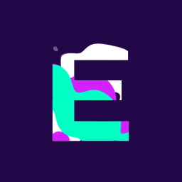

Member profileespress0.
A developer working across security research tooling and Minecraft client projects. Public work includes the Venomous addon and a native Python framework for authorized security research, network assessment, and module development.